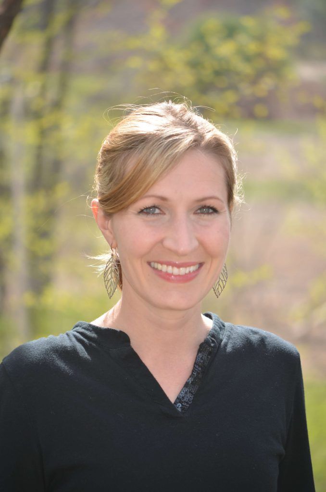

In dentistry it is important to have a tight-knit team of caring individuals to look out for your health. Our team excels at just that, so let us introduce them!

Tyneal started working in the dental field after graduating from her dental assisting program at SAIT in Alberta Canada in 2003. She has been working for Dr. Kerr since 2003 as both as his dental assistant and patient care coordinator.
Tyneal is Canada born but was raised a Mainer and has made Maine her home. She currently resides in Auburn with her husband Jared & their 3 kids; Raegan, McKinley and Lincoln. In her free time she enjoys playing games with friends, traveling, being outdoors and spending time with her family.
Nikki starting working as a dental hygienist after graduating from the University of New England in 2003. She began working for Dr. Kerr in August of 2003. Nikki also has a Bachelors in Science from the University of Southern Maine and an Associates in Business from Andover College.
Nikki was born and raised in Portland, Maine and currently resides in Windham with her husband Morgan and her 2 boys: Thomas and Patrick. In her free time she enjoys running, outdoor activities and enjoying time with family and friends.
Nikki was born and raised in Portland, Maine and currently resides in Windham with her husband Morgan and her 2 boys: Thomas and Patrick. In her free time she enjoys running, outdoor activities and enjoying time with family and friends.
If you would like to schedule an appointment with us, please give us a call at 207-775-0001 or email us at patientcare@drkerr.com. We are located in Portland, Maine.